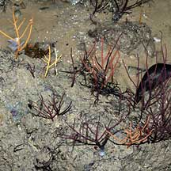
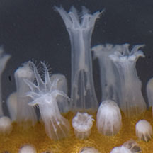
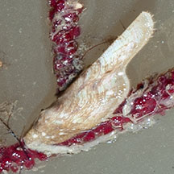
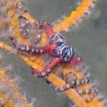
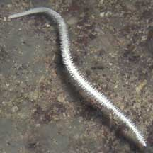

|
|
| gorgonian text index | photo index |
| Phylum Cnidaria > Class Anthozoa > Subclass Alcyonaria/Octocorallia > Order Gorgonacea |
| Sea
fans or Gorgonians Order Gorgonacea updated Dec 2019
Where seen? Most people are surprised to learn that sea fans are still quite commonly seen on our shores. Large colonies may be seen on undisturbed intertidal reefs in the North. But smaller ones may be seen even on Changi and East Coast Park. Divers may encounter large sea fans on our Southern islands. What are gorgonians? These beautiful delicate creatures are often mistaken for plants. Gorgonians belong to Phylum Cnidaria which includes the more familiar sea anemones, hard corals and jellyfishes. Gorgonians are members of the soft coral group (Subclass Alcyonaria/Octocorallia). There are about 18 families of gorgonians. Features: A gorgonian is a colony of small polyps. Each polyps is about 0.5cm or smaller, usually white or transparent. Like other soft corals, each polyp has 8 branched tentacles. Unlike other soft corals, the gorgonian polyps are supported by a central rod made of a tough but flexible protein called gorgonin that is similar to the material produced in the horns of animals. Many species incorporate calcium into the gorgonin. Some reinforce this further with an arrangement of sclerites (tiny bits of calcium). Although a sea fan has a skeleton, this is usually more flexible than the solid calcium carbonate skeletons of hard corals. The living polyps share a thin skin over this support. Gorgonian colonies usually take on branching forms, but the branching is only along one plane (i.e., most are not bushy). Thus, these colonies are usually called sea fans. Others are unbranched and grow into one long whip-like form, and are called sea whips. |
 Tiny sea fans dot the rocks. East Coast Park, Jun 06 |
 Larger sea fans seen on remote shores. Beting Bronok, Jun 04 |
 Polyps of a sea fan. Tuas, Dec 11 |
| Colonial food: Studies suggest gorgonian polyps
have few or weak stinging cells and feed on particles tinier than
zooplankton; such as phytoplankton and bacteria. Prey that are too
big or struggle too vigorously are released by the polyps. A sea fan usually grows so that the branches are at right angles to the flow of the current. This maximises the amount of water filtered and apparently breaks up the water current into curls that wash back over the polyps, for a second chance to filter out more edible bits. Sea fans are most abundant and grow largest where there is a strong one-way current. A few shallow-water sea fans like the Leathery sea fan harbour zooxanthellae (symbiotic single-celled algae) inside their polyps. These carry out photosynthesis and contribute nutrients to the host polyp. But most gorgonians do not have zooxanthellae and are thus able to grow in shadier places or murkier water. Sea fan babies: For most species, each sea fan colony is usually either male or female. In most species, the females brood the eggs. Some brood the eggs internally, while others brood them in mucus pouches on the surface of branches.The eggs develop into free-swimming planula larvae that drift with the plankton before settling down to start a new colonies. Gorgonians sometimes also reproduce by budding off new polyps to enlarge the colony. Some gorgonians purposely nip off a portion that breaks off and drifts away to settle down elsewhere and expand into a new colony. Some sea whips reproduce by dropping off a branch tip that 'roots' and starts a new colony. |
 |
 Ovulid snails on a sea fan East Coast, Jun 06 |
 Tiny colourful brittle stars. Changi, Jul 09 |
| Role in the habitat: All kinds
of small animals live on gorgonians including tunicates, barnacles,
clams, snails (such as the ovulids),
tiny shrimps, brittle
stars and gobies. Hermit
crabs have also been seen clinging to sea fans. Some of these
small animals prey on the sea fan. These animals usually take on the
shape and colour of their host. Squids may also lay their eggs on sea fans. Human uses: Gorgonians, especially fan-shaped ones, are harvested for the live aquarium trade or sold dried as ornaments. "Red coral" that is harvested for jewellery is a gorgonian that is found in the Mediterranean Sea and Sea of Japan. Gorgonians are notoriously difficult to maintain artificially in an aquarium and may release toxins that kill off tank mates. Status and threats: Gorgonians are not listed among the endangered animals of Singapore. However, like other animals harvested for the live aquarium trade, most die before they can reach the retailers. Without professional care, most die soon after they are sold. Those that do survive are unlikely to breed successfully. Like other creatures of the intertidal zone, they are affected by human activities such as reclamation and pollution. Trampling by careless visitors, and overharvesting also have an impact on local populations. Abandoned fishing lines can also uproot living sea fans. |
| Some Sea fans on Singapore shores |


 Leathery sea fan |
 Sea whip |

| Order
Gorgonacea recorded for Singapore from Goh, N.K.C. and Chou, L.M. 20 December 1996. An annotated checklist of the gorgonians (Anthozoa: Octocorallia) of Singapore. Groups from Fabricius, Katharina and Philip Alderslade, 2001. Soft Corals and Sea Fans. *from Sih, Justin Sih and Jeff Chouw. 31 Dec 2009. Fish and whips: Use of gorgonians as a habitat by the Large Whipcoral Goby Bryaninops amplus (Larson) +from our observation. SCLERAXONIA GROUP
SUBORDER HOLAXONIA
SUBORDER CALCAXONIA
|
|
References
|